# Import the course packages
import numpy as np
import pandas as pd
import matplotlib.pyplot as plt
# Import the two datasets
gapminder = pd.read_csv("datasets/gapminder.csv")
brics = pd.read_csv("datasets/brics.csv")Intermediate Python
Import the course packages and datasets
print(gapminder.head(3)) country year population cont life_exp gdp_cap
0 Afghanistan 2007 31889923.0 Asia 43.828 974.580338
1 Albania 2007 3600523.0 Europe 76.423 5937.029526
2 Algeria 2007 33333216.0 Africa 72.301 6223.367465print(brics.head(3)) country_ab country capital area population
0 BR Brazil Brasilia 8.516 200.4
1 RU Russia Moscow 17.100 143.5
2 IN India New Delhi 3.286 1252.0Line plot (1)
With matplotlib, you can create a bunch of different plots in Python. The most basic plot is the line plot. A general recipe is given here.
import matplotlib.pyplot as plt
plt.plot(x,y)
plt.show()In the video, you already saw how much the world population has grown over the past years. Will it continue to do so? The world bank has estimates of the world population for the years 1950 up to 2100. The years are loaded in your workspace as a list called year, and the corresponding populations as a list called pop.
Instructions
print()the last item from both the year and the pop list to see what the predicted population for the year 2100 is. Use twoprint()functions.- Before you can start, you should import
matplotlib.pyplotasplt.pyplotis a sub-package ofmatplotlib, hence the dot. - Use
plt.plot()to build a line plot. year should be mapped on the horizontal axis, pop on the vertical axis. Don’t forget to finish off with theplt.show()function to actually display the plot.
Code
# Print the last item from year and pop
print(year[-1])
print(pop[-1])
# Import matplotlib.pyplot as plt
import matplotlib.pyplot as plt
# Make a line plot: year on the x-axis, pop on the y-axis
plt.plot(year,pop)
# Display the plot with plt.show()
plt.show()2100
10.85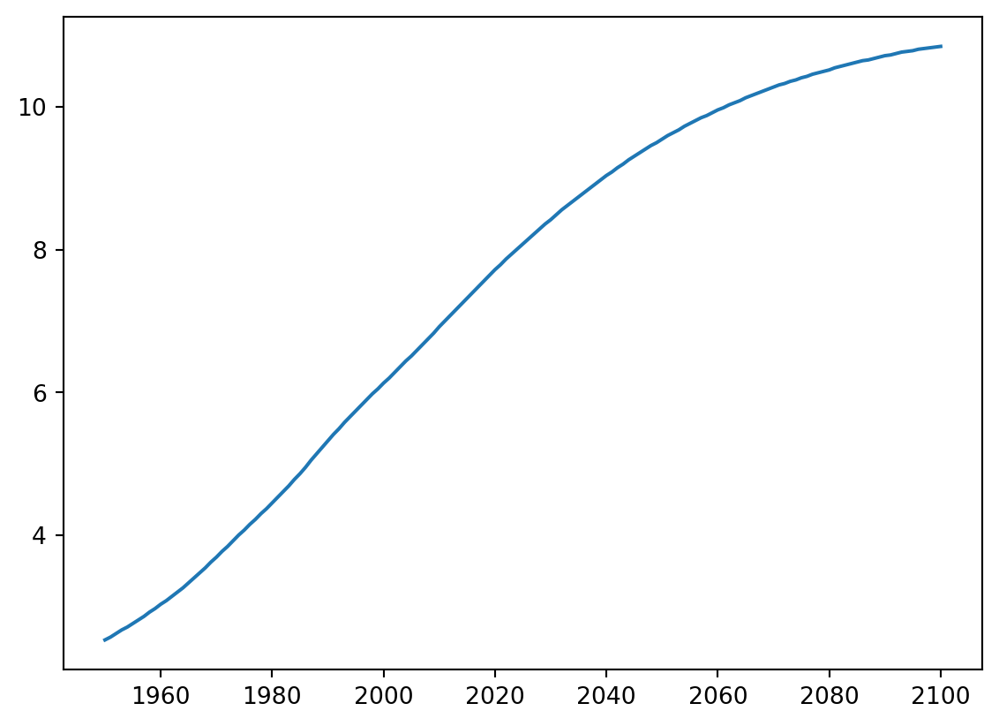
Line plot (2)
Now that you’ve built your first line plot, let’s start working on the data that professor Hans Rosling used to build his beautiful bubble chart. It was collected in 2007. Two lists are available for you:
- life_exp which contains the life expectancy for each country and
- gdp_cap, which contains the GDP per capita (i.e. per person) for each country expressed in US Dollars.
GDP stands for Gross Domestic Product. It basically represents the size of the economy of a country. Divide this by the population and you get the GDP per capita.
matplotlib.pyplot is already imported as plt, so you can get started straight away.
Instructions
- Print the last item from both the list gdp_cap, and the list life_exp; it is information about Zimbabwe.
- Build a line chart, with gdp_cap on the x-axis, and life_exp on the y-axis. Does it make sense to plot this data on a line plot?
- Don’t forget to finish off with a plt.show() command, to actually display the plot.
Code
# Print the last item of gdp_cap and life_exp
gdp_cap = list(gapminder["gdp_cap"])
life_exp=list(gapminder.life_exp)
print(gdp_cap[-1])
print(life_exp[-1])
# Make a line plot, gdp_cap on the x-axis, life_exp on the y-axis
plt.plot(gdp_cap,life_exp)
# Display the plot
plt.show()469.7092981
43.487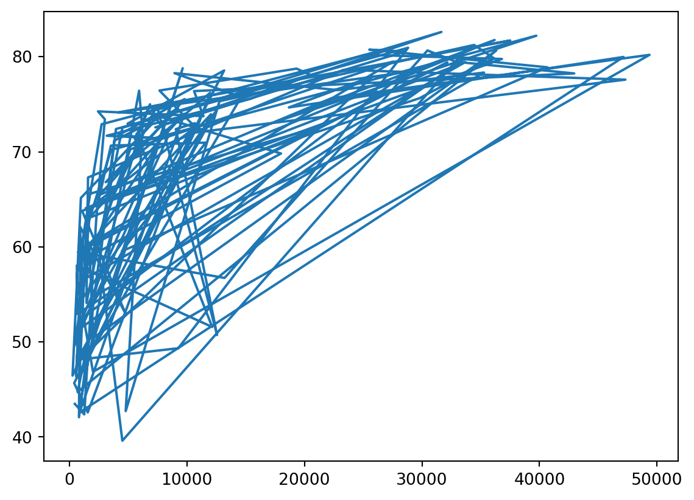
Scatter Plot (1)
When you have a time scale along the horizontal axis, the line plot is your friend. But in many other cases, when you’re trying to assess if there’s a correlation between two variables, for example, the scatter plot is the better choice. Below is an example of how to build a scatter plot.
import matplotlib.pyplot as plt plt.scatter(x,y) plt.show()
Let’s continue with the gdp_cap versus life_exp plot, the GDP and life expectancy data for different countries in 2007. Maybe a scatter plot will be a better alternative?
Again, the matplotlib.pyplot package is available as plt.
Instructions
- Change the line plot that’s coded in the script to a scatter plot.
- A correlation will become clear when you display the GDP per capita on a logarithmic scale. Add the line plt.xscale(‘log’).
- Finish off your script with plt.show() to display the plot.
Code
# Change the line plot below to a scatter plot
plt.scatter(gdp_cap, life_exp)
# Put the x-axis on a logarithmic scale
plt.xscale('log')
# Show plot
plt.show()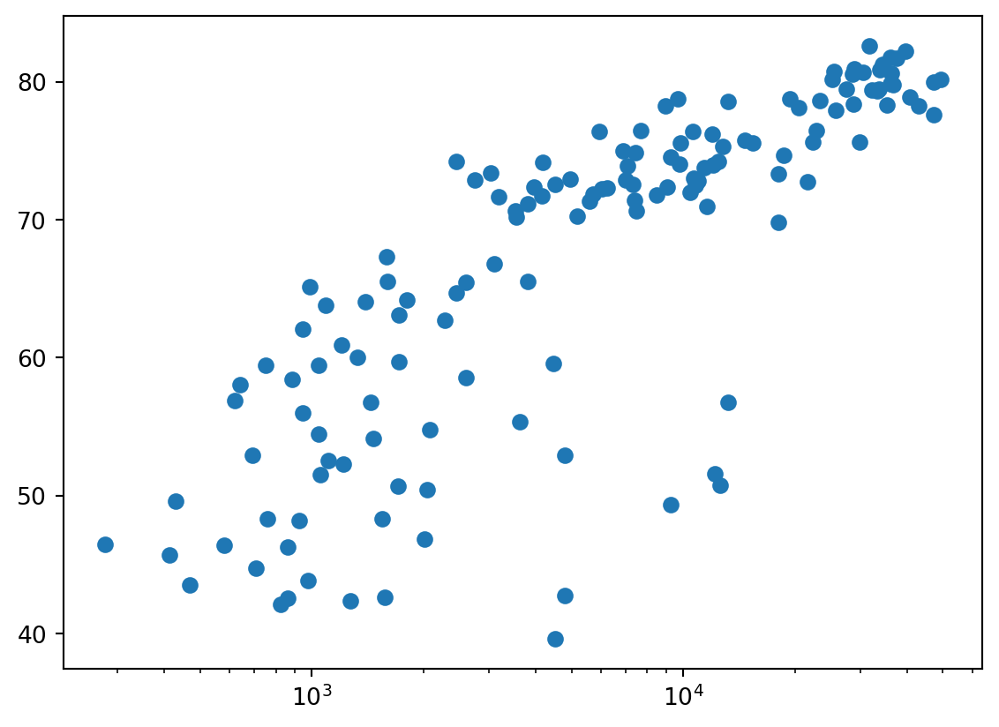
Scatter plot (2)
In the previous exercise, you saw that the higher GDP usually corresponds to a higher life expectancy. In other words, there is a positive correlation.
Do you think there’s a relationship between population and life expectancy of a country? The list life_exp from the previous exercise is already available. In addition, now also pop is available, listing the corresponding populations for the countries in 2007. The populations are in millions of people.
Instructions
- Start from scratch: import matplotlib.pyplot as plt.
- Build a scatter plot, where pop is mapped on the horizontal axis, and life_exp is mapped on the vertical axis.
- Finish the script with plt.show() to actually display the plot. Do you see a correlation?
Code
# Import package
import matplotlib.pyplot as plt
# Build Scatter plot
plt.scatter(pop[0:len(life_exp)],life_exp)
# Show plot
plt.show()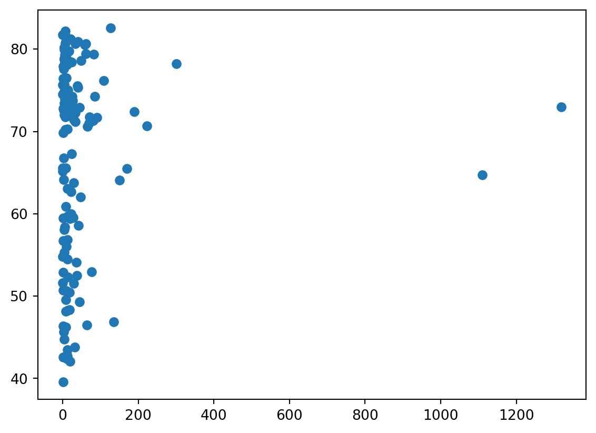
Build a histogram (1)
life_exp, the list containing data on the life expectancy for different countries in 2007, is available in your Python shell.
To see how life expectancy in different countries is distributed, let’s create a histogram of life_exp.
matplotlib.pyplot is already available as plt.
Instructions
- Use plt.hist() to create a histogram of the values in life_exp. Do not specify the number of bins; Python will set the number of bins to 10 by default for you.
- Add plt.show() to actually display the histogram. Can you tell which bin contains the most observations?
Code
# Create histogram of life_exp data
plt.hist(life_exp)
# Display histogram
plt.show()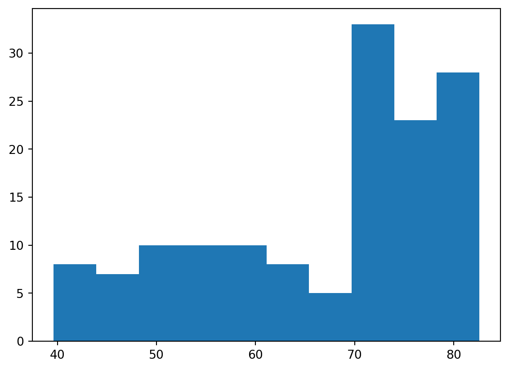
Build a histogram (2): bins
In the previous exercise, you didn’t specify the number of bins. By default, Python sets the number of bins to 10 in that case. The number of bins is pretty important. Too few bins will oversimplify reality and won’t show you the details. Too many bins will overcomplicate reality and won’t show the bigger picture.
To control the number of bins to divide your data in, you can set the bins argument.
That’s exactly what you’ll do in this exercise. You’ll be making two plots here. The code in the script already includes plt.show() and plt.clf() calls; plt.show() displays a plot; plt.clf() cleans it up again so you can start afresh.
Instructions
- Build a histogram of life_exp, with 5 bins. Can you tell which bin contains the most observations?
- Build another histogram of life_exp, this time with 20 bins. Is this better?
Code
# Build histogram with 5 bins
plt.hist(life_exp,bins=5)
# Show and clean up plot
plt.show()
plt.clf()
# Build histogram with 20 bins
plt.hist(life_exp,bins=20)
# Show and clean up again
plt.show()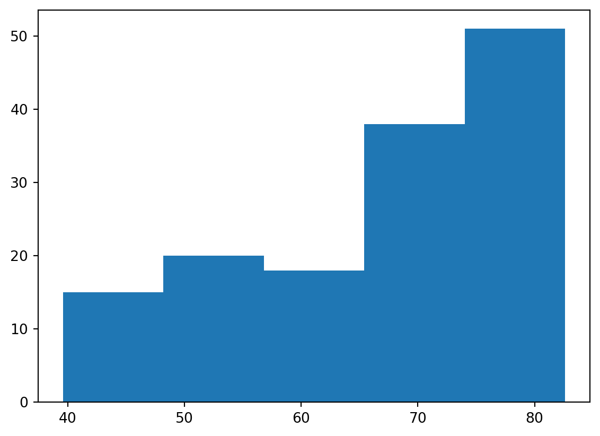
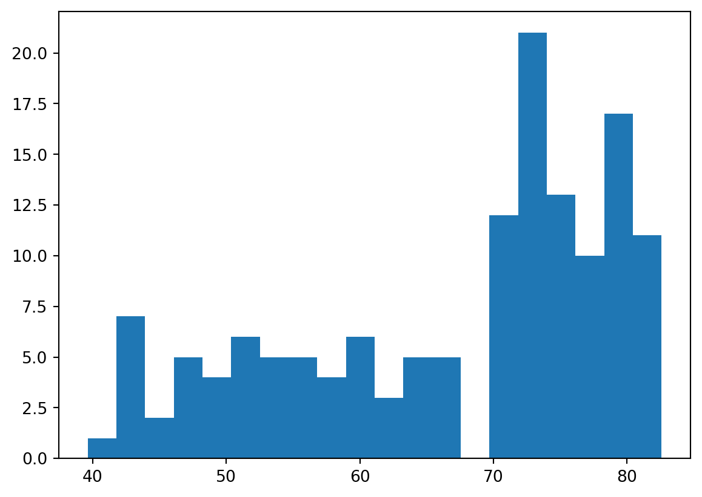
Build a histogram (3): compare
In the video, you saw population pyramids for the present day and for the future. Because we were using a histogram, it was very easy to make a comparison.
Let’s do a similar comparison. life_exp contains life expectancy data for different countries in 2007. You also have access to a second list now, life_exp1950, containing similar data for 1950. Can you make a histogram for both datasets?
You’ll again be making two plots. The plt.show() and plt.clf() commands to render everything nicely are already included. Also matplotlib.pyplot is imported for you, as plt.
Instructions
- Build a histogram of life_exp with 15 bins.
- Build a histogram of life_exp1950, also with 15 bins. Is there a big difference with the histogram for the 2007 data?
Code
# Histogram of life_exp, 15 bins
plt.hist(life_exp,bins = 15)
# Show and clear plot
plt.show()
plt.clf()
# Histogram of life_exp1950, 15 bins
plt.hist(life_exp1950,bins=15)
# Show and clear plot again
plt.show()
plt.clf()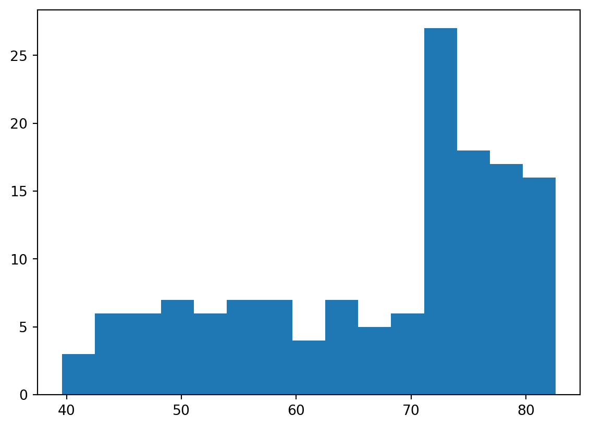
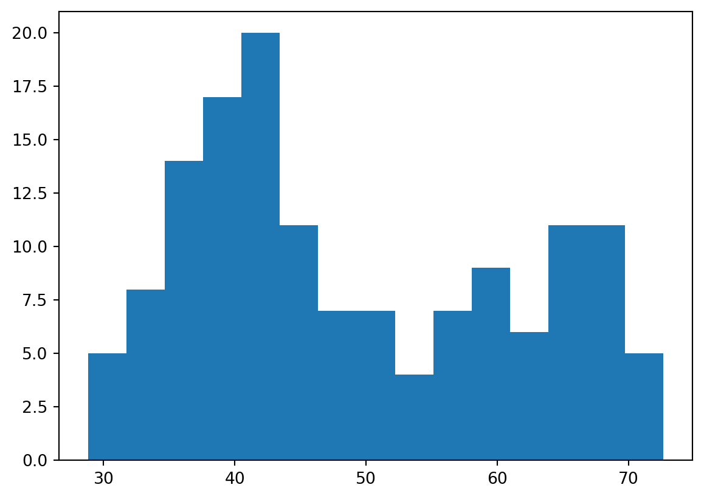
<Figure size 672x480 with 0 Axes>Labels
It’s time to customize your own plot. This is the fun part, you will see your plot come to life!
You’re going to work on the scatter plot with world development data: GDP per capita on the x-axis (logarithmic scale), life expectancy on the y-axis. The code for this plot is available in the script.
As a first step, let’s add axis labels and a title to the plot. You can do this with the xlabel(), ylabel() and title() functions, available in matplotlib.pyplot. This sub-package is already imported as plt.
Instructions
- The strings xlab and ylab are already set for you. Use these variables to set the label of the x- and y-axis.
- The string title is also coded for you. Use it to add a title to the plot.
- After these customizations, finish the script with plt.show() to actually display the plot.
Code
# Basic scatter plot, log scale
plt.scatter(gdp_cap, life_exp)
plt.xscale('log')
# Strings
xlab = 'GDP per Capita [in USD]'
ylab = 'Life Expectancy [in years]'
title = 'World Development in 2007'
# Add axis labels
plt.xlabel(xlab)
plt.ylabel(ylab)
# Add title
plt.title(title)
# After customizing, display the plot
plt.show()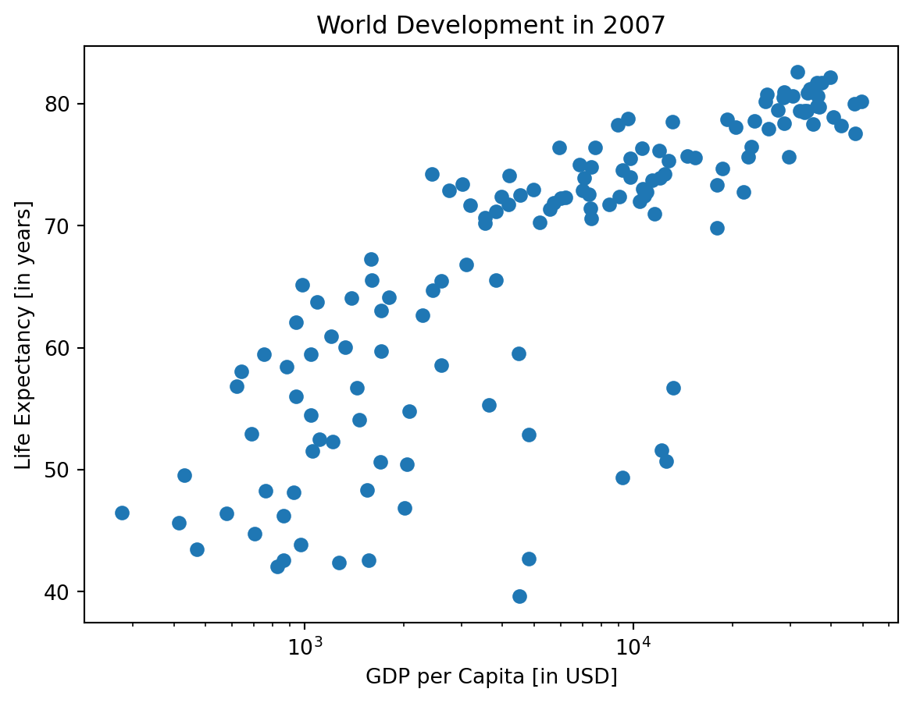
Ticks
The customizations you’ve coded up to now are available in the script, in a more concise form.
In the video, Hugo has demonstrated how you could control the y-ticks by specifying two arguments: plt.yticks([0,1,2], ["one","two","three"])
In this example, the ticks corresponding to the numbers 0, 1 and 2 will be replaced by one, two and three, respectively.
Let’s do a similar thing for the x-axis of your world development chart, with the xticks() function. The tick values 1000, 10000 and 100000 should be replaced by 1k, 10k and 100k. To this end, two lists have already been created for you: tick_val and tick_lab.
Instructions
- Use tick_val and tick_lab as inputs to the xticks() function to make the the plot more readable.
- As usual, display the plot with plt.show() after you’ve added the customizations.
Code
# Scatter plot
plt.scatter(gdp_cap, life_exp)
# Previous customizations
plt.xscale('log')
plt.xlabel('GDP per Capita [in USD]')
plt.ylabel('Life Expectancy [in years]')
plt.title('World Development in 2007')
# Definition of tick_val and tick_lab
tick_val = [1000, 10000, 100000]
tick_lab = ['1k', '10k', '100k']
# Adapt the ticks on the x-axis
plt.xticks(tick_val,tick_lab)
# After customizing, display the plot
plt.show()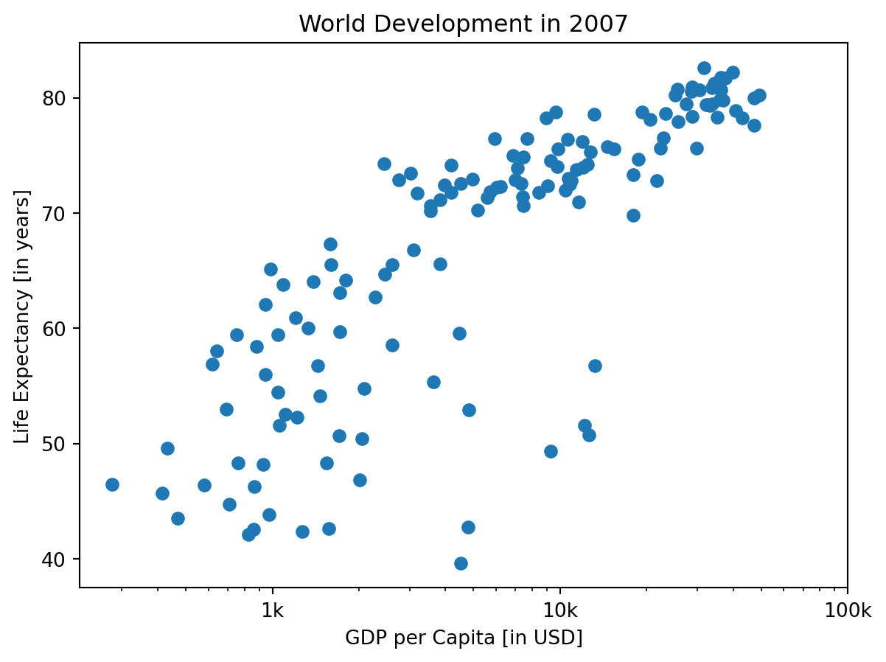
Sizes
Right now, the scatter plot is just a cloud of blue dots, indistinguishable from each other. Let’s change this. Wouldn’t it be nice if the size of the dots corresponds to the population?
To accomplish this, there is a list pop loaded in your workspace. It contains population numbers for each country expressed in millions. You can see that this list is added to the scatter method, as the argument s, for size.
Instructions
- Run the script to see how the plot changes.
- Looks good, but increasing the size of the bubbles will make things stand out more.
- Import the numpy package as np.
- Use np.array() to create a numpy array from the list pop. Call this NumPy array np_pop.
- Double the values in np_pop setting the value of np_pop equal to np_pop * 2. Because np_pop is a NumPy array, each array element will be doubled.
- Change the s argument inside plt.scatter() to be np_pop instead of pop.
Code
# Import numpy as np
import numpy as np
# Store pop as a numpy array: np_pop
np_pop = np.array(pop[0:len(gdp_cap)])
# Double np_pop
np_pop=2*np_pop
# Update: set s argument to np_pop
plt.scatter(gdp_cap[0:len(life_exp)], life_exp, s = np_pop)
# Previous customizations
plt.xscale('log')
plt.xlabel('GDP per Capita [in USD]')
plt.ylabel('Life Expectancy [in years]')
plt.title('World Development in 2007')
plt.xticks([1000, 10000, 100000],['1k', '10k', '100k'])
# Display the plot
plt.show()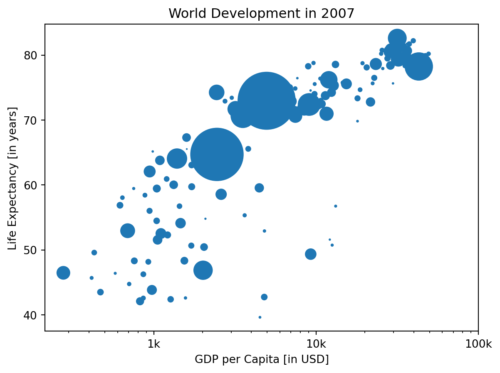
Colors
The code you’ve written up to now is available in the script.
The next step is making the plot more colorful! To do this, a list col has been created for you. It’s a list with a color for each corresponding country, depending on the continent the country is part of.
How did we make the list col you ask? The Gapminder data contains a list continent with the continent each country belongs to. A dictionary is constructed that maps continents onto colors:
dict = {
'Asia':'red',
'Europe':'green',
'Africa':'blue',
'Americas':'yellow',
'Oceania':'black'
}Nothing to worry about now; you will learn about dictionaries in the next chapter.
Instructions
- Add c = col to the arguments of the plt.scatter() function.
- Change the opacity of the bubbles by setting the alpha argument to 0.8 inside plt.scatter(). Alpha can be set from zero to one, where zero is totally transparent, and one is not at all transparent.
Code
# Specify c and alpha inside plt.scatter()
plt.scatter(x = gdp_cap, y = life_exp, s = np.array(pop[0:len(gdp_cap)]) * 2, c= col,alpha = 0.8)
# Previous customizations
plt.xscale('log')
plt.xlabel('GDP per Capita [in USD]')
plt.ylabel('Life Expectancy [in years]')
plt.title('World Development in 2007')
plt.xticks([1000,10000,100000], ['1k','10k','100k'])
# Show the plot
plt.show()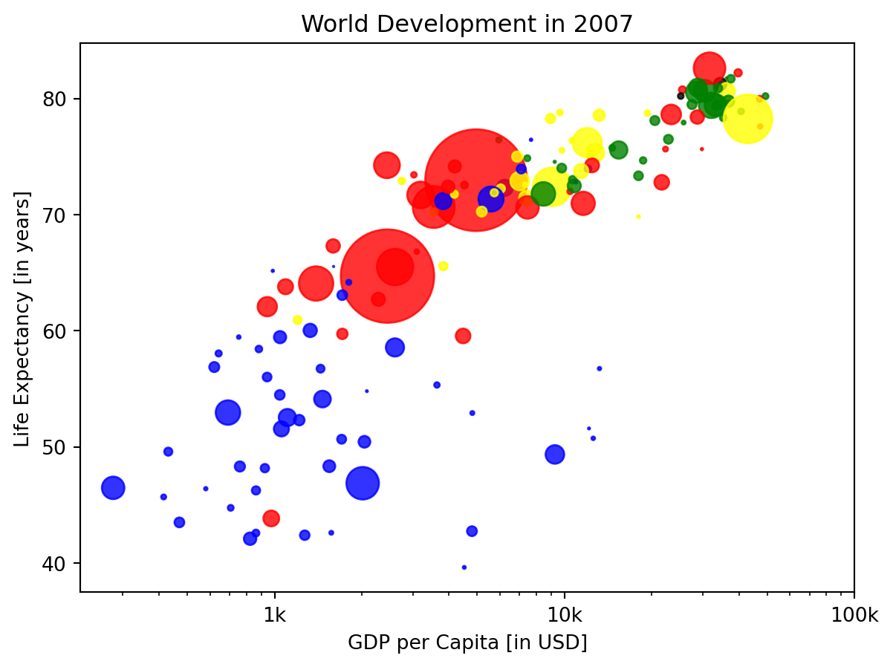
Additional Customizations
If you have another look at the script, under # Additional Customizations, you’ll see that there are two plt.text() functions now. They add the words “India” and “China” in the plot.
Instructions
- Add plt.grid(True) after the plt.text() calls so that gridlines are drawn on the plot.
Code
# Scatter plot
plt.scatter(x = gdp_cap, y = life_exp, s = np.array(pop) * 2, c = col, alpha = 0.8)
# Previous customizations
plt.xscale('log')
plt.xlabel('GDP per Capita [in USD]')
plt.ylabel('Life Expectancy [in years]')
plt.title('World Development in 2007')
plt.xticks([1000,10000,100000], ['1k','10k','100k'])
# Additional customizations
plt.text(1550, 71, 'India')
plt.text(5700, 80, 'China')
# Add grid() call
plt.grid(True)
# Show the plot
plt.show()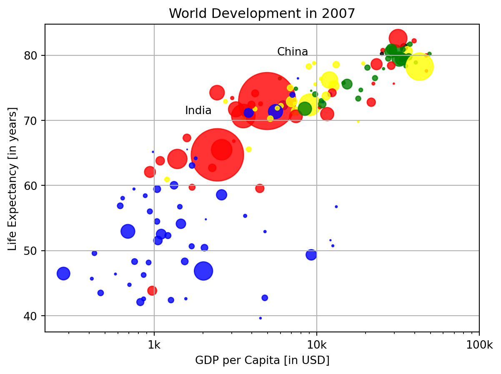
Motivation for dictionaries
To see why dictionaries are useful, have a look at the two lists defined in the script. countries contains the names of some European countries. capitals lists the corresponding names of their capital.
Instructions
- Use the index() method on countries to find the index of ‘germany’. Store this index as ind_ger.
- Use ind_ger to access the capital of Germany from the capitals list. Print it out.
Code
# Definition of countries and capital
countries = ['spain', 'france', 'germany', 'norway']
capitals = ['madrid', 'paris', 'berlin', 'oslo']
# Get index of 'germany': ind_ger
ind_ger = countries.index("germany")
# Use ind_ger to print out capital of Germany
print(capitals[ind_ger])berlinCreate dictionary
The countries and capitals lists are again available in the script. It’s your job to convert this data to a dictionary where the country names are the keys and the capitals are the corresponding values. As a refresher, here is a recipe for creating a dictionary:
my_dict = {
"key1":"value1",
"key2":"value2",
}In this recipe, both the keys and the values are strings. This will also be the case for this exercise.
Instructions
- With the strings in countries and capitals, create a dictionary called europe with 4 key:value pairs. Beware of capitalization! Make sure you use lowercase characters everywhere.
- Print out europe to see if the result is what you expected.
Code
# Definition of countries and capital
countries = ['spain', 'france', 'germany', 'norway']
capitals = ['madrid', 'paris', 'berlin', 'oslo']
# From string in countries and capitals, create dictionary europe
europe = {'spain':'madrid', 'france':'paris', 'germany':'berlin', 'norway':'oslo' }
# Print europe
print(europe){'spain': 'madrid', 'france': 'paris', 'germany': 'berlin', 'norway': 'oslo'}Access dictionary
If the keys of a dictionary are chosen wisely, accessing the values in a dictionary is easy and intuitive. For example, to get the capital for France from europe you can use: europe['france'] Here, ‘france’ is the key and ‘paris’ the value is returned.
Instructions
- Check out which keys are in europe by calling the keys() method on europe. Print out the result.
- Print out the value that belongs to the key ‘norway’.
Code
# Definition of dictionary
europe = {'spain':'madrid', 'france':'paris', 'germany':'berlin', 'norway':'oslo' }
# Print out the keys in europe
print(europe.keys())
# Print out value that belongs to key 'norway'
print(europe['norway'])dict_keys(['spain', 'france', 'germany', 'norway'])
osloAccess dictionary
If the keys of a dictionary are chosen wisely, accessing the values in a dictionary is easy and intuitive. For example, to get the capital for France from europe you can use: europe['france'] Here, ‘france’ is the key and ‘paris’ the value is returned.
Instructions
- Check out which keys are in europe by calling the keys() method on europe. Print out the result.
- Print out the value that belongs to the key ‘norway’.
Code
# Definition of dictionary
europe = {'spain':'madrid', 'france':'paris', 'germany':'berlin', 'norway':'oslo' }
# Print out the keys in europe
print(europe.keys())
# Print out value that belongs to key 'norway'
print(europe['norway'])dict_keys(['spain', 'france', 'germany', 'norway'])
oslo